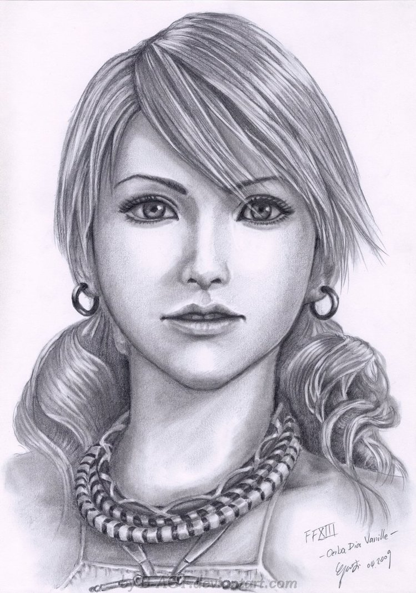
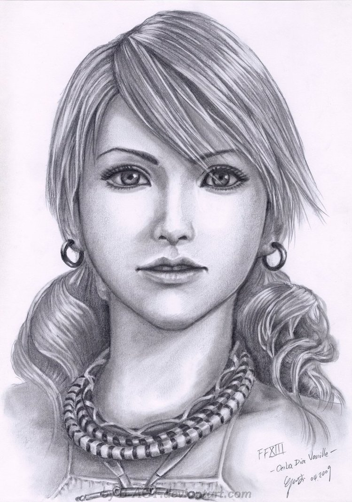

Válogatott karakterképek:
 

Numenera
Bár a játékairól lehet vitázni, Monte Cook korosztályunk egyik legismertebb játéktervezője, akiknek olyan ismert és milliók által játszott rendszerek és világok fűződnek a nevéhez (egyedül, vagy többekkel együtt), mint a D&D, az Exalted Might, vagy a Planescape. Megítélése és tevékenysége szerepjátékos nézőponttól függően többféle is lehet, de az például vitathatatlan, hogy a D&D 3.0-val lett újra „szexi” és igazán „mainstream” a szerepjáték, és új fellendülést hozott a lassan ellaposodó, néhány mammut által uralt ezredfordulóba. Amúgy nem egy unalmas ember, többször is be-, majd kilépett a Wizards-tól, vitte a saját cégét, a Malhavoc-ot, aztán 2012 óta már a saját neve, a Monte Cook Games (MCG) alatt publikál.
Az MCG létrehozását egy új játékrendszer (Cypher) és világ (Numenera) fejlesztése követte, ami természetesen Kickstarter-kampányt is kapott. A Numenera végül 2013-ban jött ki (Origins győztes is lett, plusz többszörös ENnie Awards gold és silver helyezett), amit rá egy évvel a Bruce R. Cordell-lel írt The Strange követett, és végül tavaly kijött az alaprendszert univerzálissá tevő Cypher System Rulebook szabálykönyv is. (A gyerekeknek szóló No, Thank You Evil! szerepjátékuk nemrég jelent meg.)
Forrás: LFG.hu